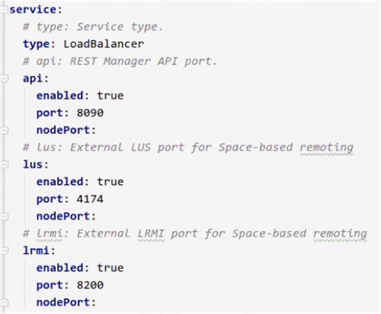

A service (Processing Unit) is a container that can hold any of the following:
You can use the event-processing example available with the
As a prerequisite for running this example, you must install Maven on the machine where you unpacked the
To build and deploy the event-processing example in Kubernetes, the following steps are required:
The first step in deploying the sample services to Kubernetes is to build them from the examples directory. The example uses Maven as its build tool, and comes with a build script that runs Maven automatically.
Open a command window and navigate to the following folder in the
cd <product home>/examples/data-app/event-processing/
Type the following command (for Unix environments) to build the processor and feeder services:
./build.sh package
This build script finalizes the service structure of both the processor and the feeder, and copies the processor JAR file to /examples/data-app/event-processing/processor/target/data-processor/lib, making the /examples/data-app/event-processing/processor/target/data-processor/ a ready-to-use service. The final result is two service JAR files, one under processor/target and another under feeder/target.
In order to deploy the services on Kubernetes, a URL must be provided. You can use an existing HTTP server, or you can create a local HTTP server using Helm. Ensure that your Kubernetes environment has access to the URL that you provide. If you opt for a local server, we recommend creating it from the examples directory so that it can easily access the service JARs that were created.
Type the following Helm command in the command window to create a local HTTP server:
helm serve --repo-path . --address <your machine IP>:<port>In order to deploy the services on Kubernetes, a URL must be provided. You can use an existing HTTP server, (for example, a local HTTP server using Helm), or you can use the GigaSpaces CLI (or REST API) to upload the Processing Unit files to the Manager Pod.
Ensure that your Kubernetes environment has access to the URL that you provide.
Use one of the following options to upload the pu.xml files for deployment.
The upload stage does not provide high availability. The pu.xml files are uploaded only to the active Manager Pod, and are not replicated to other managers. High availability only takes effect after the service has been deployed.
Command:
./Description:
Upload a pu.xml to the target.
Parameters and Options:
| Item | Name | Description |
|---|---|---|
| Parameter | file | Path to the service file (.jar or .zip). |
| Option | --url-only | Return only the service URL after uploading |
Input Example:
This example uploads a service named myPu to the mypu.jar file.
Path
PUT /pus/resources
Description:
Upload a service to the target.
Example:
curl -X PUT --header 'Content-Type: multipart/form-data'
--header 'Accept: text/plain' {"type":"formData"} 'http://localhost:8090/v2/pus/resources'Leave this command window open so the server remains available and Kubernetes can connect to it.
Similar to deploying a Space cluster, it is best practice to first deploy the Management Pod (with the Manager), and then deploy the Data Pods (first the processor, then the feeder).
To deploy the
Open a new command window and navigate to the Helm chart directory (where you fetched the charts from the
As you did for the Space demo, type the following Helm command to deploy a Management Pod called testmanager:
helm install insightedge-manager --name testmanager
Type the following Helm command to deploy a Data Pod with the processor service from the location where it was built in the examples directory:
helm install insightedge-pu --name processor --set manager.name=testmanager,resourceUrl=http://192.168.33.16:8877/examples/data-app/event-processing/processor/target/data-processor.jar
Lastly, type the following Helm command to deploy a Data Pod with the feeder service from the same directory:
helm install insightedge-pu --name feeder --set manager.name=testmanager,resourceUrl=http://192.168.33.16:8877/examples/data-app/event-processing/feeder/target/data-feeder.jar
The Docker container is always allocated an absolute amount of memory. If this is undefined in the Helm chart, the container will use as much as is necessary to accomodate the data and processes it contains. You can limit the memory allocation for the contents of the Docker container (Data Pod, Manager Pod, processes, etc.) and the heap memory.
The on-heap memory allocation can be defined as any of the following:
The following Helm command allocates the amount of memory for both the Docker container and for the on-heap memory as an absolute value:
helm install insightedge --name test --set pu.resources.limits.memory=512Mi,pu.java.heap=256m
The following Helm commands allocates the amount of memory for the Docker container, and sets aside a specific amount of memory for the container to use. The rest of the memory is available to the Java heap.
helm install insightedge --name test --set pu.resources.limits.memory=512Mi,pu.java.heap=limit-150m
You can define the maximum size of the Docker container as an absolute value, and the maximum on-heap memory allocation for the Java running inside the Docker container as a percentage. If you use this approach, make sure you leave enough memory for the Java.
The following Helm command sets an absolute value for the Docker container, and defines the maximum Java on-heap memory as a percentage of the container memory:
helm install insightedge --name test --set pu.resources.limits.memory=256Mi,pu.java.heap=75%
The
helm inspect insightedge
The values.yaml file is printed in the command window, and each configurable value has a short explanation above it. The indentation in this printout indicates a use of a ".' (dot) in the value name. For example, the high availability property for the Platform Manager is listed as follows in the file:
manager:
ha: false
The value you will set will look like this in the command window: manager.ha=true
As part of the deployment configuration, Kubernetes services define a logical set of Pods and a policy by which to access them, called service types in KubeGrid. The following service types are available:
LoadBalancer - External load balancer in the cloud with a dedicated IP address.
NodePort - Exposes the service on the same port of each selected node.
You can configure these service types in the manager and pu Helm charts.

To view the services and their ports, run the following kubectl command:
kubectl describe svc <service name> It is strongly recommended to leave the default values. For more information about service types and when it may be advisable to modify the values, see
You can create additional values.yaml files with customized values.
The following Helm command shows how a custom YAML file can be used to override the values in the original GigaSpaces Helm chart:
helm install insightedge -f customValues.yaml --name hello
It is recommended to define the service properties in the pu.xml as placeholders (as described in the Processing Unit Deployment Properties topic), so you can override these properties using the Helm chart.
After defining the properties as placeholders, use the key1=value1;key2=value2 format to pass the override values to the Helm chart using either the --set insightedge-pu.properties=<your key-value pairs> command, or using a custom YAML file.
The Kubernetes environment supports using MemoryXtend for off-heap RAM
To configure your Kubernetes-based environment, you need to make sure that the container memory allocation is sufficient to accommodate the overall RAM requirements. Additionally, you should define the memory threshold properties as placeholders in the pu.xml file. For more information about the MemoryXtend Off-Heap RAM driver, see
To configure your Kubernetes-based environment to use external storage, you need to enable persistent volume storage in both the Processing unit pu.xml and the pu Helm chart. This is described in detail in
For information about the Kubernetes persistent volume storage model, refer to the Kubernetes documentation.